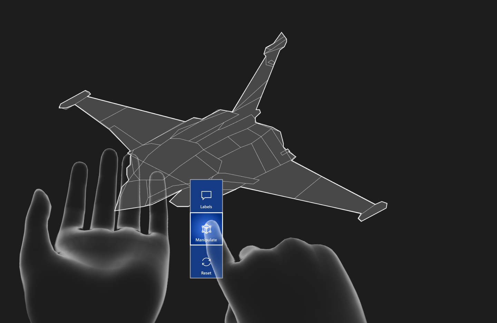

Impact de la réalité augmentée dans la maintenance aéronautique
Contexte
Les équipes d’un acteur industriel de premier plan ont sollicité une analyse UX d’un dispositif combinant Réalité Virtuelle (RV) et Réalité Augmentée (RA), utilisé dans des contextes de maintenance technique nécessitant précision et fiabilité.
Objectifs
Évaluer les risques liés à l’utilisation du système, mesurer son acceptabilité auprès des utilisateurs et valoriser ses avantages par rapport aux outils existants sur tablette, afin de proposer un système immersif plus performant.
Rôle & démarche
- Observations terrain et entretiens avec les utilisateurs pour comprendre les besoins et contraintes réelles ;
- Définition et mise en place de protocoles de tests utilisateurs alignés avec les indicateurs clés de performance ;
- Ateliers avec les équipes de développement pour s’assurer de la faisabilité technique ;
- Conception de composants graphiques, maquettes et spécifications IHM ;
- Analyse documentaire sur la sécurité et bonnes pratiques dans des systèmes RA en environnements contraints ;
- Suivi du développement pour garantir la conformité aux maquettes et aux recommandations UX.
Impact / Résultats
- Meilleure facilité d’apprentissage et rétention de l’information avec le système RA comparé à l’outil existant ;
- Aucun échec ou erreur critique lors des tests terrain ;
- Acceptation et intention d’usage très positives auprès des utilisateurs ;
- Système final développé conforme aux maquettes et recommandations fournies.
